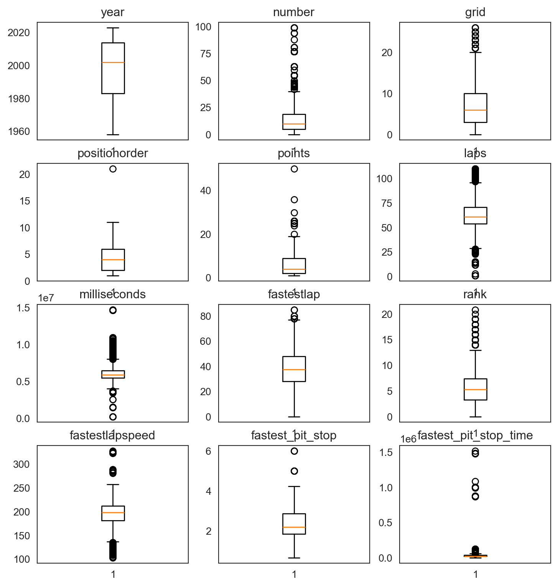
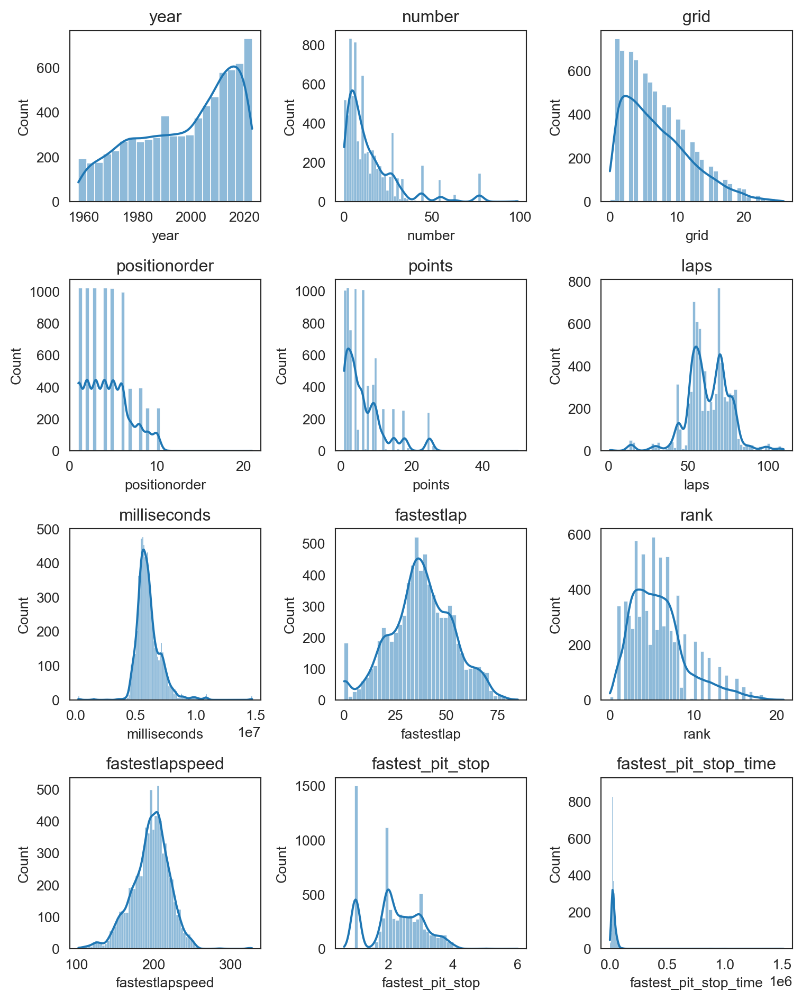
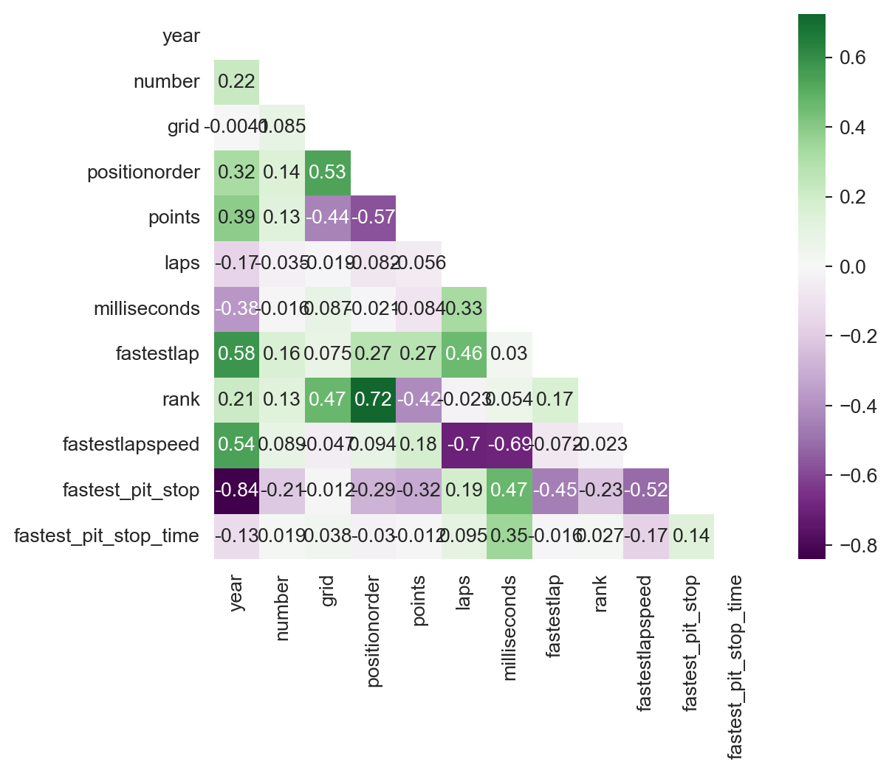
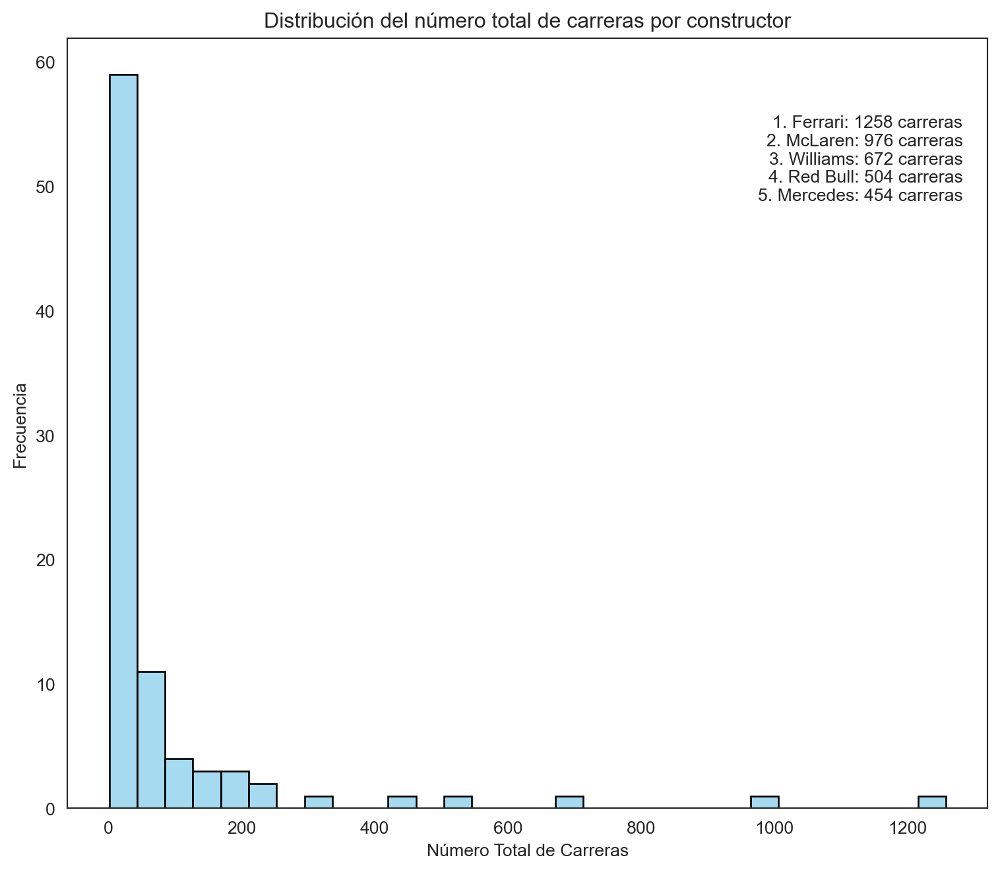
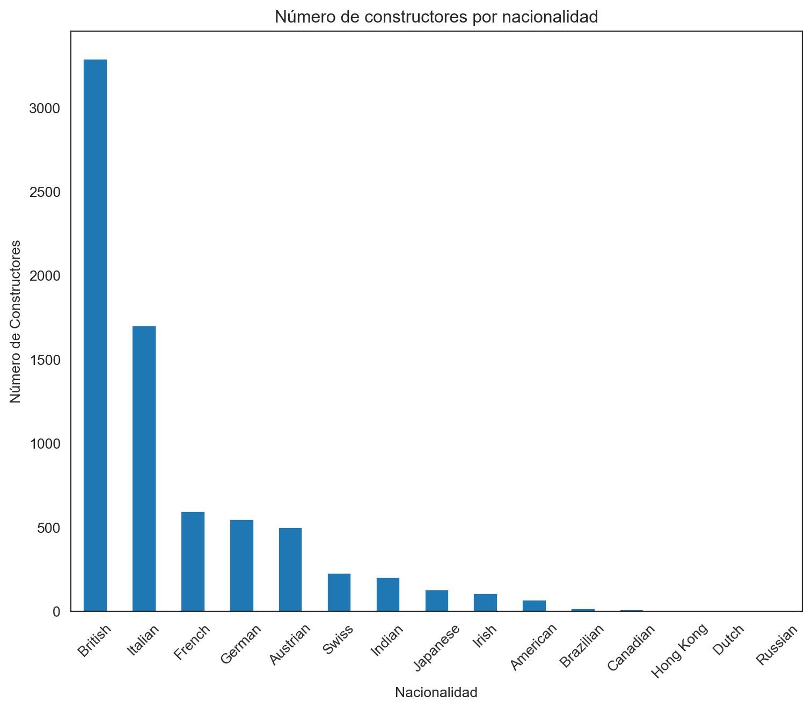
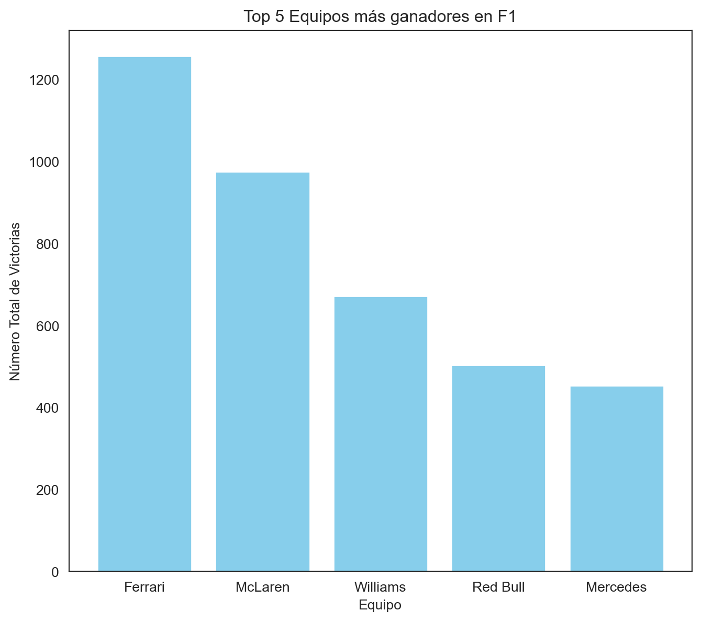
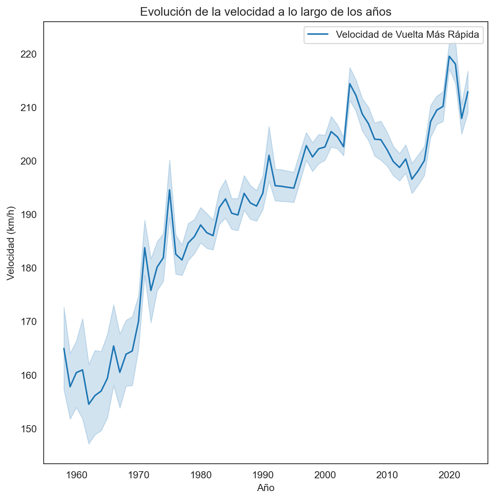
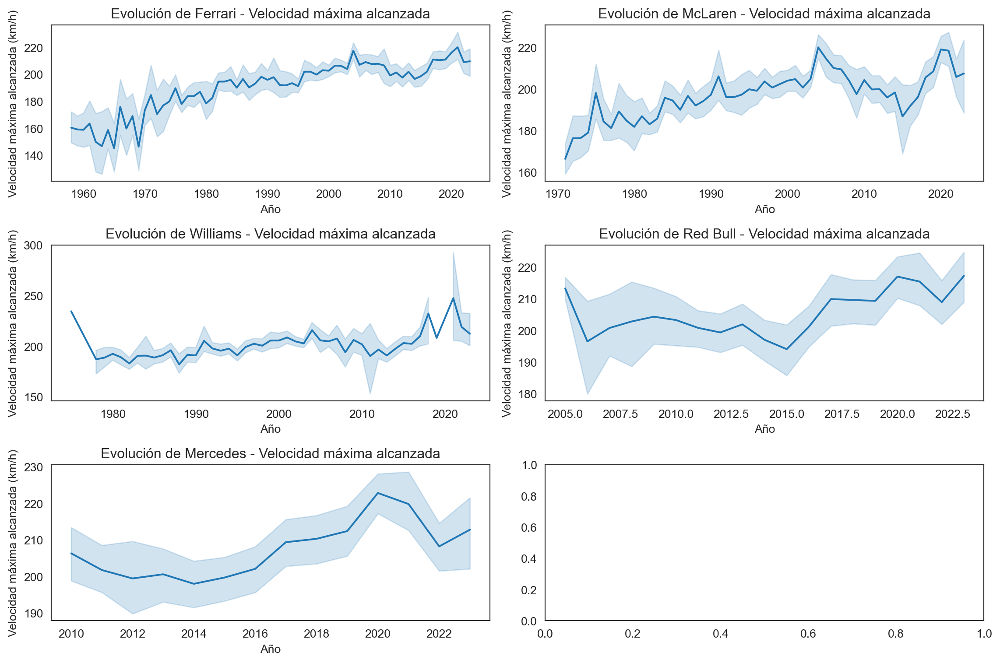
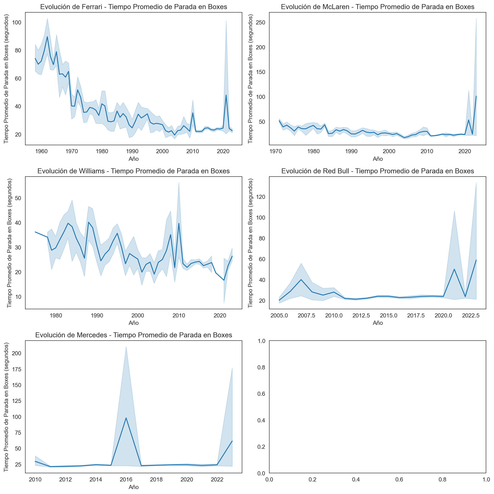

import pandas as pd
import psycopg2 as psy
from psycopg2 import Error
import numpy as np
from sklearn.experimental import enable_iterative_imputer
from sklearn.impute import IterativeImputer
import plotly.graph_objects as go
import plotly.express as px
import matplotlib.pyplot as plt
import seaborn as sns
sns.set_style('white')Campeonato Mundial de la Formula 1 (1950 - 2023)
Visualización Científica
La Fórmula 1, también conocida como F1, representa la cúspide de las carreras internacionales de monoplazas de ruedas abiertas, bajo la supervisión de la Federación Internacional del Automóvil (FIA). Desde su primera temporada en 1950, el Campeonato Mundial de Pilotos, rebautizado como el Campeonato Mundial de Fórmula 1 de la FIA en 1981, ha destacado como una de las principales competiciones a nivel global. La palabra “fórmula” en su nombre alude al conjunto de reglas que guían a todos los participantes en cuanto a la construcción y funcionamiento de los vehículos.
¿Qué haremos?
En esta sección, llevaremos a cabo un análisis exploratorio centrado en la tabla constructors, que abarca los datos de los equipos que han competido en las carreras disputadas desde 1950 hasta 2023. Sin embargo, para llevar a cabo este análisis de manera integral, necesitamos consolidar información proveniente de diversas fuentes. Utilizaremos consultas para unificar los datos de la tabla constructors con aquellos de las tablas circuits (que contiene información sobre los circuitos donde se celebran las carreras de Fórmula 1), results (que proporciona los resultados de las carreras), pit_stops (paradas realizadas en boxes).
Es fundamental destacar que, para la tabla results nos enfocaremos exclusivamente en los equipos que obtuvieron puntos en cada carrera. Asimismo, de la tabla pit_stops, extraeremos únicamente la información correspondiente a la parada en boxes más rápida realizada.
Librerías
Para este proyecto trabajaremos con las siguientes librerías:
- Pandas
- Psycopg2
- Plotly
- Matplotlib
- Seaborn
- Scikit-learn
Pueden instalarse utilizando el siguiente comando desde la terminal: pip install pandas psycopg2 plotly..., o bien, mediante el archivo requirements.txt utilizando pip install -r requirements.txt en la terminal.
Una vez instaladas, podemos importarlas en nuestro entorno de trabajo de la siguiente manera:
Además, haremos uso de la siguiente función para evitar la repetición de código y facilitar la conexión a la base de datos:
def connection_db() -> psy.extensions.connection:
try:
conn = psy.connect(DATABASE_URL)
return conn
except (Exception, Error) as e:
print('Error while connecting to PostgreSQL', e)Es importante destacar que en esta función, obtenemos una variable de entorno que almacena los datos de conexión a la base de datos. En este caso, estamos utilizando Neon que nos permite crear un servidor de bases de datos con PostgreSQL.
Obtención de los datos
Veamos inicialmente las columnas que tenemos para cada una de las tablas mencionadas.
Tabla constructors
try:
connection = connection_db()
cursor = connection.cursor()
cursor.execute(
"""
SELECT *
FROM constructors
LIMIT 5;
"""
)
records = cursor.fetchall()
records_data = pd.DataFrame(records)
columns = []
for column in cursor.description:
columns.append(column[0])
records_data.columns = columns
display(records_data)
except (Exception, Error) as e:
print('Error while executing the query', e)
finally:
if(connection):
cursor.close()
connection.close()| constructorid | constructorref | name | nationality | url | |
|---|---|---|---|---|---|
| 0 | 1 | mclaren | McLaren | British | http://en.wikipedia.org/wiki/McLaren |
| 1 | 2 | bmw_sauber | BMW Sauber | German | http://en.wikipedia.org/wiki/BMW_Sauber |
| 2 | 3 | williams | Williams | British | http://en.wikipedia.org/wiki/Williams_Grand_Pr... |
| 3 | 4 | renault | Renault | French | http://en.wikipedia.org/wiki/Renault_in_Formul... |
| 4 | 5 | toro_rosso | Toro Rosso | Italian | http://en.wikipedia.org/wiki/Scuderia_Toro_Rosso |
Tabla circuits
try:
connection = connection_db()
cursor = connection.cursor()
cursor.execute(
"""
SELECT *
FROM circuits
LIMIT 5;
"""
)
records = cursor.fetchall()
records_data = pd.DataFrame(records)
columns = []
for column in cursor.description:
columns.append(column[0])
records_data.columns = columns
display(records_data)
except (Exception, Error) as e:
print('Error while executing the query', e)
finally:
if(connection):
cursor.close()
connection.close()| circuitid | circuitref | name | location | country | lat | lng | alt | url | |
|---|---|---|---|---|---|---|---|---|---|
| 0 | 1 | albert_park | Albert Park Grand Prix Circuit | Melbourne | Australia | -37.8497 | 144.968 | 10 | http://en.wikipedia.org/wiki/Melbourne_Grand_P... |
| 1 | 2 | sepang | Sepang International Circuit | Kuala Lumpur | Malaysia | 2.76083 | 101.738 | 18 | http://en.wikipedia.org/wiki/Sepang_Internatio... |
| 2 | 3 | bahrain | Bahrain International Circuit | Sakhir | Bahrain | 26.0325 | 50.5106 | 7 | http://en.wikipedia.org/wiki/Bahrain_Internati... |
| 3 | 4 | catalunya | Circuit de Barcelona-Catalunya | Montmeló | Spain | 41.57 | 2.26111 | 109 | http://en.wikipedia.org/wiki/Circuit_de_Barcel... |
| 4 | 5 | istanbul | Istanbul Park | Istanbul | Turkey | 40.9517 | 29.405 | 130 | http://en.wikipedia.org/wiki/Istanbul_Park |
Tabla results
try:
connection = connection_db()
cursor = connection.cursor()
cursor.execute(
"""
SELECT *
FROM results
LIMIT 5;
"""
)
records = cursor.fetchall()
records_data = pd.DataFrame(records)
columns = []
for column in cursor.description:
columns.append(column[0])
records_data.columns = columns
display(records_data)
except (Exception, Error) as e:
print('Error while executing the query', e)
finally:
if(connection):
cursor.close()
connection.close()| resultid | raceid | driverid | constructorid | number | grid | position | positiontext | positionorder | points | laps | time | milliseconds | fastestlap | rank | fastestlaptime | fastestlapspeed | statusid | |
|---|---|---|---|---|---|---|---|---|---|---|---|---|---|---|---|---|---|---|
| 0 | 1 | 18 | 1 | 1 | 22 | 1 | 1 | 1 | 1 | 10 | 58 | 1:34:50.616 | 5690616 | 39 | 2 | 1:27.452 | 218.300 | 1 |
| 1 | 2 | 18 | 2 | 2 | 3 | 5 | 2 | 2 | 2 | 8 | 58 | +5.478 | 5696094 | 41 | 3 | 1:27.739 | 217.586 | 1 |
| 2 | 3 | 18 | 3 | 3 | 7 | 7 | 3 | 3 | 3 | 6 | 58 | +8.163 | 5698779 | 41 | 5 | 1:28.090 | 216.719 | 1 |
| 3 | 4 | 18 | 4 | 4 | 5 | 11 | 4 | 4 | 4 | 5 | 58 | +17.181 | 5707797 | 58 | 7 | 1:28.603 | 215.464 | 1 |
| 4 | 5 | 18 | 5 | 1 | 23 | 3 | 5 | 5 | 5 | 4 | 58 | +18.014 | 5708630 | 43 | 1 | 1:27.418 | 218.385 | 1 |
Tabla pit stops
try:
connection = connection_db()
cursor = connection.cursor()
cursor.execute(
"""
SELECT *
FROM pit_stops
LIMIT 5;
"""
)
records = cursor.fetchall()
records_data = pd.DataFrame(records)
columns = []
for column in cursor.description:
columns.append(column[0])
records_data.columns = columns
display(records_data)
except (Exception, Error) as e:
print('Error while executing the query', e)
finally:
if(connection):
cursor.close()
connection.close()| raceid | driverid | stop | lap | time | duration | milliseconds | |
|---|---|---|---|---|---|---|---|
| 0 | 841 | 153 | 1 | 1 | 17:05:23 | 26.898 | 26898 |
| 1 | 841 | 30 | 1 | 1 | 17:05:52 | 25.021 | 25021 |
| 2 | 841 | 17 | 1 | 11 | 17:20:48 | 23.426 | 23426 |
| 3 | 841 | 4 | 1 | 12 | 17:22:34 | 23.251 | 23251 |
| 4 | 841 | 13 | 1 | 13 | 17:24:10 | 23.842 | 23842 |
Tabla final
Con base en las columnas proporcionadas de cada tabla, podemos listar las que se utilizarán en el análisis de la siguiente manera:
- constructors: constructorId, constructorRef, name, nationality
- Circuits: name, location, country.
- Results: raceId, driverId, points, grid, laps, milliseconds, fastestlap, rank, fastestlapspeed, number, status.
- Pit Stops: stop, miliseconds.
Realicemos entonces la consulta a la base de datos para obtener esta tabla.
try:
connection = connection_db()
cursor = connection.cursor()
cursor.execute(
"""
SELECT
c.constructorid, c.constructorref, c.name, c.nationality,
circuits.name AS circuit_name, circuits.location AS circuit_location, circuits.country AS circuit_country,
races.year,
r.raceid, r.driverid, r.number, r.grid, r.positionorder, r.points, r.laps, r.milliseconds, r.fastestlap, r.rank, r.fastestlapspeed, r.statusid,
fastest_pit_stop.stop AS fastest_pit_stop, fastest_pit_stop.milliseconds AS fastest_pit_stop_time
FROM constructors c
JOIN constructor_results ON c.constructorId = constructor_results.constructorId
JOIN races ON constructor_results.raceId = races.raceId
JOIN circuits ON races.circuitId = circuits.circuitId
JOIN (
SELECT raceId, constructorId, MAX(points) AS points
FROM constructor_standings
GROUP BY raceId, constructorId
) AS cs ON constructor_results.raceId = cs.raceId AND constructor_results.constructorId = cs.constructorId
JOIN results as r ON constructor_results.raceId = r.raceId AND constructor_results.constructorId = r.constructorId AND r.points > 0
LEFT JOIN (
SELECT ps.raceId, ps.driverId, ps.stop, ps.milliseconds
FROM pit_stops ps
JOIN drivers d ON ps.driverId = d.driverId
WHERE (ps.raceId, ps.driverId, ps.milliseconds) IN (
SELECT raceId, driverId, MIN(milliseconds)
FROM pit_stops
GROUP BY raceId, driverId
)
) AS fastest_pit_stop ON constructor_results.raceId = fastest_pit_stop.raceId AND r.driverId = fastest_pit_stop.driverId;
"""
)
records = cursor.fetchall()
records_data = pd.DataFrame(records)
columns = []
for column in cursor.description:
columns.append(column[0])
records_data.columns = columns
display(records_data.head())
except (Exception, Error) as e:
print('Error while executing the query', e)
finally:
if(connection):
cursor.close()
connection.close()| constructorid | constructorref | name | nationality | circuit_name | circuit_location | circuit_country | year | raceid | driverid | ... | positionorder | points | laps | milliseconds | fastestlap | rank | fastestlapspeed | statusid | fastest_pit_stop | fastest_pit_stop_time | |
|---|---|---|---|---|---|---|---|---|---|---|---|---|---|---|---|---|---|---|---|---|---|
| 0 | 1 | mclaren | McLaren | British | Albert Park Grand Prix Circuit | Melbourne | Australia | 2008 | 18 | 1 | ... | 1 | 10 | 58 | 5690616.0 | 39.0 | 2.0 | 218.300 | 1 | NaN | NaN |
| 1 | 2 | bmw_sauber | BMW Sauber | German | Albert Park Grand Prix Circuit | Melbourne | Australia | 2008 | 18 | 2 | ... | 2 | 8 | 58 | 5696094.0 | 41.0 | 3.0 | 217.586 | 1 | NaN | NaN |
| 2 | 3 | williams | Williams | British | Albert Park Grand Prix Circuit | Melbourne | Australia | 2008 | 18 | 3 | ... | 3 | 6 | 58 | 5698779.0 | 41.0 | 5.0 | 216.719 | 1 | NaN | NaN |
| 3 | 4 | renault | Renault | French | Albert Park Grand Prix Circuit | Melbourne | Australia | 2008 | 18 | 4 | ... | 4 | 5 | 58 | 5707797.0 | 58.0 | 7.0 | 215.464 | 1 | NaN | NaN |
| 4 | 1 | mclaren | McLaren | British | Albert Park Grand Prix Circuit | Melbourne | Australia | 2008 | 18 | 5 | ... | 5 | 4 | 58 | 5708630.0 | 43.0 | 1.0 | 218.385 | 1 | NaN | NaN |
5 rows × 22 columns
Análisis exploratorio de datos
En esta sección nos sumergiremos en la comprensión de los datos disponibles, exploraremos los tipos de variables presentes, calcularemos medidas de tendencia central, llevaremos a cabo la depuración de los datos y procederemos a su visualización.
Para llevar a cabo este análisis, nos apoyaremos en el marco de trabajo establecido, APP Framework.
- Atención: Entender el conjunto de datos.
- Propósito: Establecer objetivos claros.
- Proceso: Realizar el Análisis Exploratorio de Datos (EDA) propiamente dicho.
- Beneficio: Extraer y aplicar los resultados obtenidos.
Conociendo los datos
Conocer los datos es un paso fundamental en cualquier análisis. Proporciona una comprensión inicial del problema, permite validar la calidad de los datos, seleccionar características relevantes, preparar los datos adecuadamente y generar ideas y hipótesis. En resumen, la exploración inicial de los datos sienta las bases para un análisis más profundo y asegura que los resultados sean significativos y confiables.
Tipos de datos
Para realizar un análisis exploratorio, primero debes conocer el tipo de variables con las que estamos tratando. Conocer si tenemos variables numéricas o categóricas podrían determinar el rumbo del análisis que realizaremos.
records_data.dtypesconstructorid int64
constructorref object
name object
nationality object
circuit_name object
circuit_location object
circuit_country object
year int64
raceid int64
driverid int64
number int64
grid int64
positionorder int64
points int64
laps int64
milliseconds float64
fastestlap float64
rank float64
fastestlapspeed object
statusid int64
fastest_pit_stop float64
fastest_pit_stop_time float64
dtype: objectObservemos que todas las variables tienen el tipo de dato correcto, excepto la columna fastestlapspeed, que toma valores numéricos pero está siendo interpretada como un dato tipo object. Por lo tanto, es necesario convertir esta columna en tipo numérico. Además, vamos a cambiar los tipos de datos de las variables raceid, statusid,circuitid, driverid y constructorid a tipo object.
records_data['fastestlapspeed'] = pd.to_numeric(records_data['fastestlapspeed'])
records_data[['raceid', 'driverid', 'constructorid', 'statusid']] = records_data[['raceid', 'driverid', 'constructorid', 'statusid']].astype('object')
records_data.dtypesconstructorid object
constructorref object
name object
nationality object
circuit_name object
circuit_location object
circuit_country object
year int64
raceid object
driverid object
number int64
grid int64
positionorder int64
points int64
laps int64
milliseconds float64
fastestlap float64
rank float64
fastestlapspeed float64
statusid object
fastest_pit_stop float64
fastest_pit_stop_time float64
dtype: objectDimensiones de los registros
Determinar el tamaño de nuestros registros es fundamental, ya que nos permite comprender la magnitud de la información que estamos manejando. Esto a su vez nos ayuda a establecer posibles caminos a seguir en caso de realizar transformaciones y análisis adicionales.
records_data.shape(7441, 22)len(records_data['constructorref'].unique())88Esto indica que desde el año 1950 hasta el 2023, en las más de 1000 carreras que se han llevado a cabo, han competido 88 equipos en esta competencia. Además, teniendo más de 7000 registros significa que estamos trabajando con una cantidad considerable de datos sobre equipos constructores.
Datos faltantes
Determinar la presencia de datos faltantes es crucial, ya que puede indicar si podemos confiar en una columna para el análisis o si necesitamos tomar medidas para imputar esos valores ausentes.
records_data.isnull().sum()constructorid 0
constructorref 0
name 0
nationality 0
circuit_name 0
circuit_location 0
circuit_country 0
year 0
raceid 0
driverid 0
number 0
grid 0
positionorder 0
points 0
laps 0
milliseconds 1546
fastestlap 3888
rank 3877
fastestlapspeed 3888
statusid 0
fastest_pit_stop 4932
fastest_pit_stop_time 4932
dtype: int64Con los resultados obtenidos, observamos que tenemos una cantidad significativa de datos faltantes. Esta situación puede afectar los análisis futuros, dependiendo del tipo de variable que estemos considerando. Es importante determinar un método adecuado para la imputación de datos en caso de que sea necesario. Veamos el porcentaje que representa esta cantidad de datos faltantes en el total de nuestros datos.
missing_values = records_data.isnull().sum()
missing_percentage = round((missing_values / len(records_data)) * 100, 4)
missing_percentageconstructorid 0.0000
constructorref 0.0000
name 0.0000
nationality 0.0000
circuit_name 0.0000
circuit_location 0.0000
circuit_country 0.0000
year 0.0000
raceid 0.0000
driverid 0.0000
number 0.0000
grid 0.0000
positionorder 0.0000
points 0.0000
laps 0.0000
milliseconds 20.7768
fastestlap 52.2510
rank 52.1032
fastestlapspeed 52.2510
statusid 0.0000
fastest_pit_stop 66.2814
fastest_pit_stop_time 66.2814
dtype: float64Tenemos un gran porcentaje de datos faltantes en nuestras variables. Sin embargo, estos datos faltantes parecen estar concentrados en las variables relacionadas con medidas de tiempos y velocidades. Esto sugiere que estos datos podrían faltar debido a limitaciones técnicas o falta de registro en las fechas más antiguas, donde la toma de estas medidas podría no haber sido sistemática.
Para comprender mejor la distribución de estos datos faltantes, examinemos en qué fechas están ocurriendo y verifiquemos la fecha máxima y mínima en la que faltan estas observaciones.
records_data[records_data.isnull().any(axis = 1)]| constructorid | constructorref | name | nationality | circuit_name | circuit_location | circuit_country | year | raceid | driverid | ... | positionorder | points | laps | milliseconds | fastestlap | rank | fastestlapspeed | statusid | fastest_pit_stop | fastest_pit_stop_time | |
|---|---|---|---|---|---|---|---|---|---|---|---|---|---|---|---|---|---|---|---|---|---|
| 0 | 1 | mclaren | McLaren | British | Albert Park Grand Prix Circuit | Melbourne | Australia | 2008 | 18 | 1 | ... | 1 | 10 | 58 | 5690616.0 | 39.0 | 2.0 | 218.300 | 1 | NaN | NaN |
| 1 | 2 | bmw_sauber | BMW Sauber | German | Albert Park Grand Prix Circuit | Melbourne | Australia | 2008 | 18 | 2 | ... | 2 | 8 | 58 | 5696094.0 | 41.0 | 3.0 | 217.586 | 1 | NaN | NaN |
| 2 | 3 | williams | Williams | British | Albert Park Grand Prix Circuit | Melbourne | Australia | 2008 | 18 | 3 | ... | 3 | 6 | 58 | 5698779.0 | 41.0 | 5.0 | 216.719 | 1 | NaN | NaN |
| 3 | 4 | renault | Renault | French | Albert Park Grand Prix Circuit | Melbourne | Australia | 2008 | 18 | 4 | ... | 4 | 5 | 58 | 5707797.0 | 58.0 | 7.0 | 215.464 | 1 | NaN | NaN |
| 4 | 1 | mclaren | McLaren | British | Albert Park Grand Prix Circuit | Melbourne | Australia | 2008 | 18 | 5 | ... | 5 | 4 | 58 | 5708630.0 | 43.0 | 1.0 | 218.385 | 1 | NaN | NaN |
| ... | ... | ... | ... | ... | ... | ... | ... | ... | ... | ... | ... | ... | ... | ... | ... | ... | ... | ... | ... | ... | ... |
| 7299 | 1 | mclaren | McLaren | British | Autódromo Hermanos Rodríguez | Mexico City | Mexico | 2022 | 1094 | 846 | ... | 9 | 2 | 70 | NaN | 48.0 | 17.0 | 185.779 | 11 | 1.0 | 22585.0 |
| 7300 | 51 | alfa | Alfa Romeo | Swiss | Autódromo Hermanos Rodríguez | Mexico City | Mexico | 2022 | 1094 | 822 | ... | 10 | 1 | 70 | NaN | 43.0 | 16.0 | 185.866 | 11 | 1.0 | 23863.0 |
| 7379 | 1 | mclaren | McLaren | British | Circuit de Monaco | Monte-Carlo | Monaco | 2023 | 1104 | 846 | ... | 9 | 2 | 77 | NaN | 46.0 | 19.0 | 154.324 | 11 | 1.0 | 24663.0 |
| 7380 | 1 | mclaren | McLaren | British | Circuit de Monaco | Monte-Carlo | Monaco | 2023 | 1104 | 857 | ... | 10 | 1 | 77 | NaN | 47.0 | 14.0 | 154.983 | 11 | 1.0 | 25851.0 |
| 7430 | 117 | aston_martin | Aston Martin | British | Hungaroring | Budapest | Hungary | 2023 | 1109 | 840 | ... | 10 | 1 | 69 | NaN | 54.0 | 11.0 | 189.051 | 11 | 1.0 | 21910.0 |
5280 rows × 22 columns
Fecha mínima: 1958
Fecha promedio: 1990
Fecha máxima: 2023Observando estos resultados, podemos confirmar nuestra teoría. Estos registros faltantes pueden ser debidos a limitaciones técnicas en aquellos tiempos. Sin embargo, también tenemos datos faltantes recientes.
Exploración de los datos
En esta sección realizaremos el verdadero análisis exploratorio de nuestros datos. Abordaremos los siguientes aspectos:
Medidas de tendencia central: Calcularemos medidas como la media, la mediana y la moda para entender mejor la distribución de nuestros datos.
Limpieza de los datos: Abordaremos la limpieza de nuestros datos, incluyendo la búsqueda de datos atípicos.
Transformación: Determinaremos si es necesario aplicar alguna transformación a nuestros datos para facilitar los análisis subsiguientes.
Visualización: Utilizaremos herramientas gráficas para explorar el comportamiento de nuestros datos y extraer patrones o tendencias.
Esta fase nos permitirá comprender mejor la naturaleza de nuestros datos y prepararlos adecuadamente para análisis más avanzados.
Medidas de tendencia central
records_data.describe()| year | number | grid | positionorder | points | laps | milliseconds | fastestlap | rank | fastestlapspeed | fastest_pit_stop | fastest_pit_stop_time | |
|---|---|---|---|---|---|---|---|---|---|---|---|---|
| count | 7441.000000 | 7441.000000 | 7441.000000 | 7441.000000 | 7441.000000 | 7441.000000 | 5.895000e+03 | 3553.000000 | 3564.000000 | 3553.000000 | 2509.000000 | 2.509000e+03 |
| mean | 1997.963177 | 14.495498 | 7.137078 | 4.354522 | 6.467679 | 62.388792 | 5.989774e+06 | 46.603152 | 6.680415 | 206.006290 | 1.536070 | 3.173199e+04 |
| std | 18.309481 | 15.192749 | 4.989723 | 2.463845 | 5.667732 | 13.737097 | 1.089727e+06 | 14.355980 | 4.232408 | 20.582848 | 0.761929 | 9.771809e+04 |
| min | 1958.000000 | 0.000000 | 0.000000 | 1.000000 | 1.000000 | 1.000000 | 2.070710e+05 | 2.000000 | 0.000000 | 147.980000 | 1.000000 | 1.317300e+04 |
| 25% | 1983.000000 | 5.000000 | 3.000000 | 2.000000 | 2.000000 | 54.000000 | 5.388156e+06 | 39.000000 | 3.000000 | 195.557000 | 1.000000 | 2.147400e+04 |
| 50% | 2002.000000 | 10.000000 | 6.000000 | 4.000000 | 4.000000 | 61.000000 | 5.771321e+06 | 48.000000 | 6.000000 | 206.603000 | 1.000000 | 2.287400e+04 |
| 75% | 2014.000000 | 19.000000 | 10.000000 | 6.000000 | 9.000000 | 71.000000 | 6.295221e+06 | 56.000000 | 10.000000 | 219.005000 | 2.000000 | 2.463900e+04 |
| max | 2023.000000 | 99.000000 | 26.000000 | 21.000000 | 50.000000 | 110.000000 | 1.472659e+07 | 85.000000 | 20.000000 | 257.320000 | 6.000000 | 1.517308e+06 |
Estos resultados nos pueden permitir concluir lo siguiente:
Puntos, posición en la parrilla y número de vueltas: Los datos muestran que el promedio de puntos obtenidos por carrera es de aproximadamente 6.47. La posición promedio en la parrilla de salida es alrededor de 7.14. En cuanto al número de vueltas, el promedio es de aproximadamente 62.39. Estas variabilidades indican que hay una amplia gama de resultados en términos de puntos, posición en la parrilla y número de vueltas, lo que podría atribuirse a diferencias en la dificultad de los circuitos, la calidad de los vehículos y las estrategias de los equipos en cada carrera.
Tiempo de carrera y velocidad: El tiempo medio de carrera es de aproximadamente 5.99 millones de milisegundos (alrededor de 99.83 minutos) millones de milisegundos. Esta variabilidad en los tiempos de carrera puede deberse a la longitud del circuito, las condiciones climáticas y la cantidad de incidentes en la pista. La velocidad media de la vuelta más rápida realizada por el ganador es de alrededor de 206.01 km/h. Estas diferencias en la velocidad pueden ser atribuibles a las características específicas del circuito y la competencia entre los conductores.
Paradas en boxes: El tiempo medio para la parada en boxes más rápida es de aproximadamente 31.73 segundos. Las paradas en boxes indican que hay una variabilidad en los tiempos de pit stop entre las carreras, que puede estar influenciada por factores como la estrategia del equipo y la eficiencia en el box.
Limpieza de los datos
La limpieza de datos es una etapa crucial en cualquier análisis, por lo que en este apartado trataremos los datos faltantes y observaremos si existen datos atípicos en nuestras variables.
Datos faltantes
Existen diversas estrategias para abordar este problema. Usualmente, en este tipo de análisis se recurre a la imputación de valores faltantes utilizando la media, moda o mediana, o llenando los datos con los valores anteriores o siguientes. Sin embargo, estas técnicas pueden no ser óptimas para conjuntos de datos extensos o con características específicas.
En nuestro caso, una estrategia efectiva sería utilizar la imputación de datos faltantes basada en puntos similares en los datos mediante el algoritmo KNN (K-Nearest Neighbors) y Random Forest Classification. Este método considera las características de observaciones similares para estimar los valores faltantes de manera más precisa y realista, lo que resulta especialmente útil en conjuntos de datos complejos como el nuestro.
Inicialmente, creemos un DataFrame temporal donde estarán los mismos datos de records_data pero sin las columnas correspondientes a tipo object.
temp_df = records_data.select_dtypes(exclude=['object'])
imputer = IterativeImputer(min_value=0, max_iter=30, imputation_order='roman', random_state=1)
imputed_data = imputer.fit_transform(temp_df)
temp_df_imputed = pd.DataFrame(imputed_data, columns=temp_df.columns)
temp_df_imputed.isnull().sum()year 0
number 0
grid 0
positionorder 0
points 0
laps 0
milliseconds 0
fastestlap 0
rank 0
fastestlapspeed 0
fastest_pit_stop 0
fastest_pit_stop_time 0
dtype: int64Bien, ya no tenemos datos faltantes. Ahora, verifiquemos si los resultados obtenidos en las medidas de tendencia central del DataFrame original cambiaron significativamente.
temp_df_imputed.describe()| year | number | grid | positionorder | points | laps | milliseconds | fastestlap | rank | fastestlapspeed | fastest_pit_stop | fastest_pit_stop_time | |
|---|---|---|---|---|---|---|---|---|---|---|---|---|
| count | 7441.000000 | 7441.000000 | 7441.000000 | 7441.000000 | 7441.000000 | 7441.000000 | 7.441000e+03 | 7441.000000 | 7441.000000 | 7441.000000 | 7441.000000 | 7.441000e+03 |
| mean | 1997.963177 | 14.495498 | 7.137078 | 4.354522 | 6.467679 | 62.388792 | 6.081225e+06 | 37.759931 | 5.846977 | 196.131523 | 2.240600 | 3.454560e+04 |
| std | 18.309481 | 15.192749 | 4.989723 | 2.463845 | 5.667732 | 13.737097 | 1.042933e+06 | 15.428452 | 3.313179 | 24.840240 | 0.824293 | 5.900247e+04 |
| min | 1958.000000 | 0.000000 | 0.000000 | 1.000000 | 1.000000 | 1.000000 | 2.070710e+05 | 0.000000 | 0.000000 | 102.884413 | 0.646780 | 0.000000e+00 |
| 25% | 1983.000000 | 5.000000 | 3.000000 | 2.000000 | 2.000000 | 54.000000 | 5.471968e+06 | 28.193697 | 3.334282 | 181.618486 | 1.843325 | 2.172100e+04 |
| 50% | 2002.000000 | 10.000000 | 6.000000 | 4.000000 | 4.000000 | 61.000000 | 5.899051e+06 | 37.728190 | 5.300952 | 198.225000 | 2.185505 | 2.571253e+04 |
| 75% | 2014.000000 | 19.000000 | 10.000000 | 6.000000 | 9.000000 | 71.000000 | 6.496058e+06 | 48.000000 | 7.430359 | 212.063000 | 2.871513 | 3.848875e+04 |
| max | 2023.000000 | 99.000000 | 26.000000 | 21.000000 | 50.000000 | 110.000000 | 1.472659e+07 | 85.000000 | 20.818095 | 327.756546 | 6.000000 | 1.517308e+06 |
Comparando los resultados de las medidas de tendencia central antes y después de la imputación de datos con el algoritmo KNN, observamos algunas diferencias significativas en ciertas variables:
Puntos, posición en la parrilla y número de vueltas: No se observan cambios significativos en las medidas de tendencia central y dispersión de los puntos obtenidos, la posición en la parrilla de salida y el número de vueltas antes y después de la imputación de datos.
Tiempo de carrera y velocidad: Después de la imputación de datos, se observa un ligero aumento en la media del tiempo de carrera, mientras que la desviación estándar disminuye. Esto sugiere una mayor consistencia en los tiempos de carrera entre las carreras. Por otro lado, no hay cambios significativos en las estadísticas de velocidad de la vuelta más rápida antes y después de la imputación.
Paradas en boxes: Después de la imputación de datos, se observa un aumento en la media del tiempo de la parada más rápida, lo que indica que las paradas en boxes pueden haber sido ligeramente más lentas en promedio después de la imputación. Sin embargo, la desviación estándar disminuye, lo que sugiere una mayor consistencia en los tiempos de parada más rápida entre las carreras.
Ahora que hemos realizado la imputación de datos, pasemos estos datos a nuestro dataframe original.
records_data[temp_df.columns] = temp_df_imputed
records_data.isnull().sum()constructorid 0
constructorref 0
name 0
nationality 0
circuit_name 0
circuit_location 0
circuit_country 0
year 0
raceid 0
driverid 0
number 0
grid 0
positionorder 0
points 0
laps 0
milliseconds 0
fastestlap 0
rank 0
fastestlapspeed 0
statusid 0
fastest_pit_stop 0
fastest_pit_stop_time 0
dtype: int64Datos atípicos
Veamos ahora si existen datos atípicos en nuestro registro. En este caso, utilizaremos el rango intercuartílico (IQR) para identificar los valores atípicos. Si un valor cae por debajo de Q1 - 1.5 * IQR o por encima de Q3 + 1.5 * IQR, se considera un valor atípico.
numeric_columns = temp_df.columns
for col in numeric_columns:
q1 = records_data[col].quantile(0.25)
q3 = records_data[col].quantile(0.75)
iqr = q3 - q1
lower_bound = q1 - 1.5 * iqr
upper_bound = q3 + 1.5 * iqr
outliers = records_data[(records_data[col] < lower_bound) | (records_data[col] > upper_bound)]
n_outliers = len(outliers)
print(f'#Outliers in {col} are {n_outliers} and represent a {round(n_outliers/len(records_data) * 100, 4)}% of total records')#Outliers in year are 0 and represent a 0.0% of total records
#Outliers in number are 503 and represent a 6.7598% of total records
#Outliers in grid are 94 and represent a 1.2633% of total records
#Outliers in positionorder are 1 and represent a 0.0134% of total records
#Outliers in points are 274 and represent a 3.6823% of total records
#Outliers in laps are 263 and represent a 3.5345% of total records
#Outliers in milliseconds are 309 and represent a 4.1527% of total records
#Outliers in fastestlap are 10 and represent a 0.1344% of total records
#Outliers in rank are 272 and represent a 3.6554% of total records
#Outliers in fastestlapspeed are 155 and represent a 2.0831% of total records
#Outliers in fastest_pit_stop are 12 and represent a 0.1613% of total records
#Outliers in fastest_pit_stop_time are 451 and represent a 6.061% of total recordsComo podemos observar, respecto a los más de 7000 registros que tiene la tabla, hay una pequeña cantidada de datos significativa de datos atípicos en nuestras variables. Veamos gráficamente qué es lo que está ocurriendo con ellos.
Realizaremos un gráfico de caja y bigotes e histogramas para ver el comportamiento y la distribución de nuestros datos.
plt.figure(figsize=(9,12))
i = 1
for col in numeric_columns:
plt.subplot(5,3,i)
plt.boxplot(records_data[col],whis=1.5)
plt.title(col)
i += 1
plt.show()
plt.figure(figsize=(8,12))
i = 1
for col in numeric_columns:
plt.subplot(5, 3, i)
sns.histplot(records_data[col], kde=True)
plt.title(col)
i += 1
plt.tight_layout()
plt.show()
Dada la naturaleza de las variables, en algunos casos como rank, lap, grid, points, entre otros que son datos numéricos discretos y representan una categoría específica, es normal que existan datos atípicos. Por otro lado, para las otras variables en nuestra base de datos, estos datos atípicos no están afectando mucho la distribución de cada una de ellas, por lo tanto, no realizaremos cambios en ellas.
Visualización
La visualización es uno de los puntos más importantes a la hora de realizar una exploración de los datos. Con ella, no solo podemos encontrar las relaciones que existen entre nuestras variables, sino que también podemos representar gráficamente las informaciones más relevantes de los datos.
Comencemos visualizando los gráficos de correlación y dispersión entre las variables para comprender mejor sus relaciones y encontrar posibles patrones.
Gráfico de correlación
corr = records_data[numeric_columns].corr()
mask = np.triu(np.ones_like(corr, dtype=bool))
sns.heatmap(corr, annot=True, cmap='PRGn', square=True, center=0, mask=mask)
Como podemos observar, las variables con una alta correlación (>0.5 o <-0.5) son aquellas que están relacionadas entre sí, como laps, fastestlapspeed, fastest_lap, positionorder, year, fastest_pip_stop entre otras. Por lo tanto, esto no debería ser un problema y podemos proseguir con la exploración de los datos.
Gráfico de dispersión
plt.figure(figsize=(8, 12))
sns.pairplot(records_data[numeric_columns])
plt.show()<Figure size 768x1152 with 0 Axes>
De este gráfico podemos notar que a medida que pasan los años, los equipos han ha evolucionado progresivamente en términos de velocidades y tiempos de carreras obtenidos. La velocidad y duración en boxes han aumentado, lo que indica una mejora en los automóviles y las técnicas de revisión de ellos. Sin embargo, estos cambios en las velocidades y tiempos también se han vuelto más dispersos a lo largo de los años, lo que implica que ha habido una gran diferencia entre los equipos constructores. Además, también podemos observar algunas relaciones proporcionales en nuestras variables, como aquellas relacionadas nuevamente con las velocidades y tiempos.
Distribución de carreras
constructor_stats = records_data.groupby('name').size().reset_index(name='total_races')
constructor_stats = constructor_stats.sort_values(by='total_races', ascending=False)
constructor_stats = constructor_stats.rename(columns={'name': 'constructor_name'})
top_constructors = constructor_stats.head(5)
plt.figure(figsize=(8, 7))
sns.histplot(constructor_stats['total_races'], kde=False, bins=30, color='skyblue', edgecolor='black')
plt.title('Distribución del Número Total de Carreras por Constructor')
plt.xlabel('Número Total de Carreras')
plt.ylabel('Frecuencia')
text = '\n'.join([f"{i+1}. {row['constructor_name']}: {row['total_races']} carreras" for i, (index, row) in enumerate(top_constructors.iterrows(), start=0)])
plt.text(max(top_constructors['total_races']) * 1.02, plt.ylim()[1] * 0.9, text, ha='right', va='top', fontsize=10)
plt.tight_layout()
plt.show()
Se observa que la mayoría de los constructores han participado en una cantidad menor de carreras, con una concentración significativa cerca del cero. Esto indica que hay muchos equipos que han tenido una presencia breve en el deporte (pocas temporadas). Sin embargo, hay un pequeño grupo de equipos, como Ferrari y McLaren, que resaltan con una participación en un número mucho mayor de carreras, superando los 800 Grandes Premios, lo que subraya su posición como pilares históricos de la Fórmula 1 con una larga tradición de competencia continua.
Distribución de costructores por nacionalidad
constructor_stats = records_data.groupby('nationality').size().reset_index(name='num_constructors')
constructor_stats = constructor_stats.sort_values(by='num_constructors', ascending=False)
constructor_stats = constructor_stats.rename(columns={'nationality': 'constructor_nationality'})
top_constructors = constructor_stats.head(5)
plt.figure(figsize=(8, 7))
constructor_stats.set_index('constructor_nationality')['num_constructors'].plot(kind='bar')
plt.title('Número de Constructores por Nacionalidad')
plt.xlabel('Nacionalidad')
plt.ylabel('Número de Constructores')
plt.xticks(rotation=45)
plt.tight_layout()
plt.show()
El gráfico muestra la distribución de constructores de Fórmula 1 por nacionalidad. La nacionalidad británica domina claramente con la mayor cantidad de constructores, lo cual resalta la influencia y la historia del Reino Unido en el automovilismo de F1. Le siguen con menor frecuencia los constructores americanos e italianos, reflejando también su papel significativo en la F1.
La presencia de una variedad de otras nacionalidades indica la diversidad internacional de los equipos, aunque con una representación mucho menor comparada con las tres principales. Esta distribución no solo refleja la historia y geografía del deporte sino también las industrias automotrices nacionales y su apoyo al automovilismo.
Top 5 equipos más ganadores
constructor_stats = records_data[records_data['positionorder'] == 1]
constructor_stats = records_data.groupby('name').size().reset_index(name='total_wins')
constructor_stats = constructor_stats.sort_values(by='total_wins', ascending=False)
constructor_stats = constructor_stats.rename(columns={'name': 'constructor_name'})
top_constructors = constructor_stats.head(5)
plt.figure(figsize=(8, 7))
plt.bar(top_constructors['constructor_name'], top_constructors['total_wins'], color='skyblue')
plt.title('Top 5 Equipos Más Ganadores en F1')
plt.xlabel('Equipo')
plt.ylabel('Número Total de Victorias')
plt.xticks()
plt.show()
El gráfico muestra el top 10 de equipos más ganadores en la historia de la Fórmula 1. Ferrari lidera con una diferencia significativa, destacando su legado como la escudería más exitosa. McLaren le sigue, con Mercedes, Williams y Red Bull completando los cinco primeros lugares. Estos equipos han sido fundamentales en el deporte, no solo por su número de victorias sino también por su influencia en la evolución de la competición.
Evolución de la velocidad
plt.figure(figsize=(8, 8))
sns.lineplot(x='year', y='fastestlapspeed', data=records_data, label='Velocidad de Vuelta Más Rápida')
plt.title('Evolución de la velocidad a lo largo de los años')
plt.xlabel('Año')
plt.ylabel('Velocidad (km/h)')
plt.legend()
plt.show()
El gráfico presenta la evolución de la velocidad de la vuelta más rápida en la Fórmula 1 a lo largo de los años. Se observan fluctuaciones en la velocidad a lo largo del tiempo, con una tendencia general al aumento. La sombra alrededor de la línea indica la variabilidad en la velocidad de la vuelta más rápida cada año, sugiriendo que, aunque hay años con velocidades pico, también existen otros factores que pueden afectar la velocidad, como las regulaciones técnicas, las condiciones meteorológicas o el diseño de los circuitos.
El incremento significativo de la velocidad podría atribuirse a avances tecnológicos en los motores y la aerodinámica, así como a cambios en las regulaciones de la F1 que permiten vehículos más rápidos. Sin embargo, el pico en los años recientes también puede reflejar el desarrollo y perfeccionamiento constante en las estrategias de carrera y la optimización del rendimiento del vehículo.
Evolución de la velocidad máxima alcanzada por equipo
fig, axes = plt.subplots(3, 2, figsize=(12, 8))
for ax, team in zip(axes.flatten(), top_constructors['constructor_name']):
team_data = records_data[records_data['name'] == team]
sns.lineplot(x='year', y='fastestlapspeed', data=team_data, ax=ax)
ax.set_title(f'Evolución de {team} - Velocidad máxima alcanzada')
ax.set_xlabel('Año')
ax.set_ylabel('Velocidad máxima alcanzada (km/h)')
plt.tight_layout()
plt.show()
La evolución de la velocidad máxima en la Fórmula 1 a lo largo de los años es un resultado complejo de factores como la tecnología, las regulaciones, el diseño de los circuitos y la competencia entre equipos. Cada equipo tiene su propia trayectoria, y las mejoras constantes o altibajos pueden atribuirse a diversas razones.
Evolución de las paradas en boxes
records_data['fastest_pit_stop_time_in_seconds'] = records_data['fastest_pit_stop_time'] / 1000
plt.figure(figsize=(8, 8))
sns.lineplot(x='year', y='fastestlapspeed', data=records_data, label='Velocidad de Vuelta Más Rápida')
plt.title('Evolución de la velocidad a lo largo de los años')
plt.xlabel('Año')
plt.ylabel('Velocidad (km/h)')
plt.legend()
plt.show()Evolución de las paradas en boxes por equipo
fig, axes = plt.subplots(3, 2, figsize=(12, 12))
for ax, team in zip(axes.flatten(), top_constructors['constructor_name']):
team_data = records_data[records_data['name'] == team]
sns.lineplot(x='year', y='fastest_pit_stop_time_in_seconds', data=team_data, ax=ax)
ax.set_title(f'Evolución de {team} - Tiempo Promedio de Parada en Boxes')
ax.set_xlabel('Año')
ax.set_ylabel('Tiempo Promedio de Parada en Boxes (segundos)')
plt.tight_layout()
plt.show()
La gráfica muestra cómo ha evolucionado el tiempo promedio de parada en boxes para los mejores equipos de Fórmula 1 a lo largo de los años. Las mejoras tecnológicas, el entrenamiento del personal, las estrategias de carrera y los cambios en el diseño de los autos han influido en estos tiempos. Los equipos más eficientes han logrado reducir sus tiempos de parada, demostrando habilidad y dedicación en las carreras.